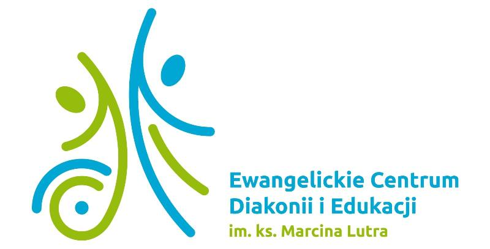
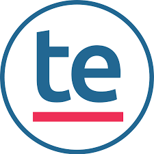
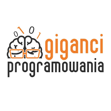
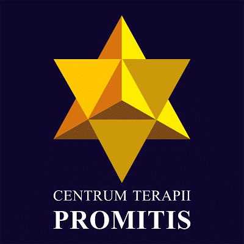

Doświadczenie

Uniwersytet SWPS
Projekt "Interakcje online i ich potencjał do wzmacniania polaryzacji społecznej: bezpośrednia oraz konceptualna replikacja badań nad efektem niezgodności" (kierownik: dr Kamil Antoni Izydorczak, finansowanie: 49 710 PLN). Projektowanie infrastruktury e-badania i przygotowanie manuskryptu w formacie Registered Report.

Uniwersytet Dolnośląski DSW Wrocław
Od października 2024 roku prowadzę zajęcia z psychologii i fizjologii widzenia oraz treningu kompetencji menedżerskich. Od października 2025 roku zatrudniony na pełen etat dydaktyczny (statystyka, psychologia społeczna). Opiekun praktyk studenckich.
Uniwersytet SWPS, Filia we Wrocławiu
W roku akademickim 2024/2025 prowadzenie zajęć z podstaw programowania w Pythonie. Od października 2025 roku prowadzenie zajęć z zakresu umiejętności akademickich (technologie informacyjne).

Zespół Szkół Specjalnych FECDIE
Pomoc psychologiczna uczniom, prowadzenie zajęć z zakresu profilaktyki i promocji zdrowia, współpraca z rodzicami i nauczycielami, diagnoza potrzeb uczniów.

TryEvidence
Udział w projektowaniu i przeprowadzaniu badań user experience w grach wideo. Analiza danych ilościowych i jakościowych, przygotowywanie raportów z badań.
Uniwersytet SWPS Filia we Wrocławiu
Współpraca w ramach grantów NAWA nr BPN GIN 2022-1-00035 oraz nr 1288-31 (kierownik: prof. Tomasz Grzyb), realizacja badań terenowych i eksperymentalnych, rekrutacja osób badanych, dbałość o procedury badawcze.

Polskie Stowarzyszenie Studentów i Absolwentów Psychologii
Automatyzacja systemów rozliczeń finansowych konferencji i budżetowania, zarządzanie zasobami organizacji. Zarządzanie sekcją trenerską: rekrutacja i szkolenie nowych trenerów, koordynacja projektów warsztatowych, organizacja wydarzeń promujących wiedzę psychologiczną.

Giganci Programowania sp. z o.o.
Prowadzenie zajęć z programowania (Scratch, Minecraft, Python) dla dzieci i młodzieży w wieku 7-12 lat. Rozwijanie logicznego myślenia i kreatywności u kursantów.
Uniwersytet SWPS Filia we Wrocławiu
Pomoc w prowadzeniu zajęć z projektu empirycznego oraz statystyki. Wsparcie studentów w obsłudze oprogramowania statystycznego (SPSS/Jamovi).
Uniwersytet SWPS Filia we Wrocławiu
Projektowanie i prowadzenie warsztatów psychologicznych dla uczniów szkół średnich. Tematyka: radzenie sobie ze stresem, autoprezentacja, efektywna nauka.
Uniwersytet SWPS Filia we Wrocławiu
Obsługa kandydatów na studia, udzielanie informacji o ofercie edukacyjnej, weryfikacja dokumentów rekrutacyjnych, wsparcie w procesie administracyjnym.
Uniwersytet SWPS Filia we Wrocławiu
Planowanie i prowadzenie badań terenowych pod opieką prof. Dariusza Dolińskiego. Analiza danych statystycznych, przegląd literatury przedmiotu, współudział w przygotowaniu publikacji.

Promotis - Przedszkole specjalne
Wsparcie terapeutów w prowadzeniu zajęć indywidualnych i grupowych dla dzieci ze spektrum autyzmu. Pomoc w czynnościach samoobsługowych.
Działalność własna
Udzielanie korepetycji studentom z zakresu statystyki, metodologii badań oraz obsługi programów statystycznych (SPSS, Jamovi, Python). Pomoc w analizie danych do prac dyplomowych.
Uniwersytet SWPS, Koło Naukowe Synergia
Projekt "Poznawcze mechanizmy powstawania fałszywych wspomnień" pod opieką dr Katarzyny Kulwickiej. Zaprojektowanie paradygmatu eksperymentalnego opartego na efekcie dezinformacji, przygotowanie materiałów bodźcowych i koordynacja zbierania danych.
Uniwersytet Dolnośląski DSW, Wrocław
Studia podyplomowe przygotowujące do pracy dydaktycznej na uczelni.
Uniwersytet SWPS
10 ukończonych szkoleń, m.in.: analiza i wizualizacja danych w R z modelem Google Gemini, kodowanie i analiza danych tekstowych w MAXQDA, wykorzystanie generatywnej AI w analizach jakościowych, zarządzanie danymi badawczymi, prowadzenie seminariów magisterskich oraz reagowanie w sytuacjach kryzysowych w sali zajęciowej.
Uniwersytet SWPS, Wrocław
Praca magisterska: "Związek medialnej wielozadaniowości z narcyzmem i lękiem społecznym". Ocena za staż badawczy: celująca (5.0), pod opieką prof. Dariusza Dolińskiego.
Sages
Intensywny program obejmujący programowanie w Pythonie, uczenie maszynowe, modelowanie regresyjne i rachunek prawdopodobieństwa.
Uniwersytet SWPS
Profesjonalne przygotowanie do prowadzenia grup warsztatowych na uczelni.